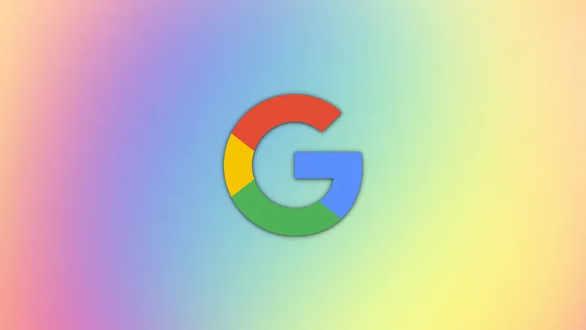

Como era a vida antes do Google?
O Google faz parte do dia a dia das pessoas há tanto tempo que pode ser difícil lembrar como era a vida antes dele. O buscador mais usado do planeta mudou completamente a maneira como as pessoas acessam informações e como as empresas fazem negócios online e offline.
Como o Google superou as rivais
Após o surgimento do Google com seu buscador, em 1997, tornou-se progressivamente mais fácil obter informações na internet. O motor de busca, disposto em uma interface simples e intuitiva, contava com a tecnologia PageRank, que identificava os links mais relevantes para as pessoas como resultado de uma pesquisa.
Isso possibilitou ter resultados muito melhores em comparação aos seus concorrentes, como o Yahoo! e o Cadê?, cuja tecnologia de busca ainda era bastante limitada e não apresentava os resultados atualizados com tanta eficácia.
O Google também revolucionou a forma de ganhar dinheiro na internet. Em vez de gerar links aleatórios de publicidade, comum em outros buscadores, ela separou os resultados orgânicos dos anúncios e, posteriormente, disponibilizou o Google Ads para mostrar links conforme o valor pago pelo anunciante. Isso permitiu às empresas lucrarem com seus negócios pela internet.
Com o tempo, a empresa desenvolveu o seu próprio ecossistema de ferramentas que auxiliam tarefas no dia a dia, como o Gmail (serviço de e-mail), o Google Tradutor (tradutor instantâneo de texto) e a suíte de aplicativos Documentos, Planilhas e Apresentações.